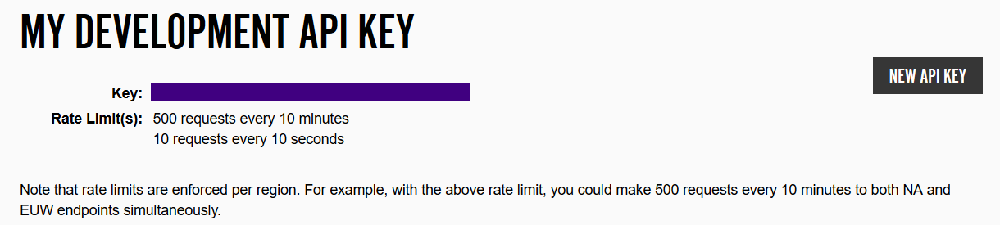

For this tutorial, obviously, we will be using the node.js runtime for all of our JavaScript needs. You can find the download here: Download node.js here! This tutorial will not go into the details about node.js, but hopefully it will address all the problems that you may run into during your own programming.
After having installed node, it's time to go to the API developer page. On this page, even before signing in, you can view the API Reference by navigating through API Documentation (at the top of the page) to the Full API Reference.
But, for now, it's time to get ourselves all set up with Riot's developer API. As of right now, basically all we can do is look; we aren't allowed to touch. This is because we still have to set ourselves up with a developer key, because until then Riot's security will keep us away.
To become a community developer, click the Sign Up Now button.
If necessary you will need to make an account for League of Legends (don't worry, you do not have to actually play the game). Once an account has been made, enter your credentials, accept the Terms and Conditions, and continue on to the next page.
There are two very important things to take note of now that you have your key: never give anybody else your developer key (why mine is purpled out), and the Rate Limt for your key. Both of these are highly valuable, and not to be taken lightly.
Not giving away the key makes perfect sense to most people, but the rate limit might be a little confusing. The purpose of the rate limit is to control server traffic from each key. If you exceed the rate limit with your key, Riot has the ability and the prerogative to disable it until it can be brought under control. This is just a security measure in place, with similar intentions as CORS (more on this acronym next page).